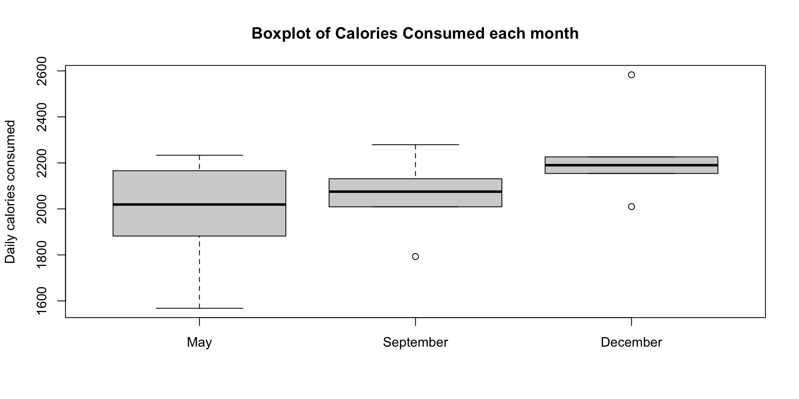
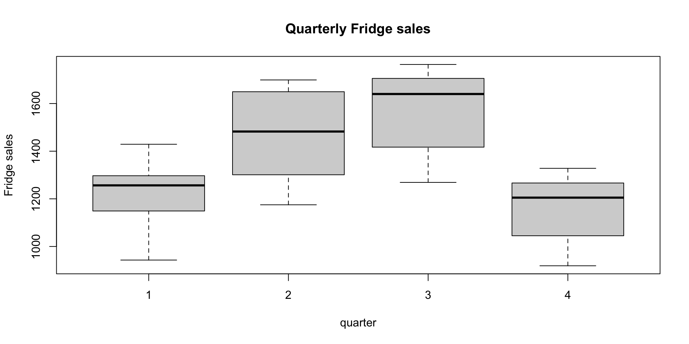
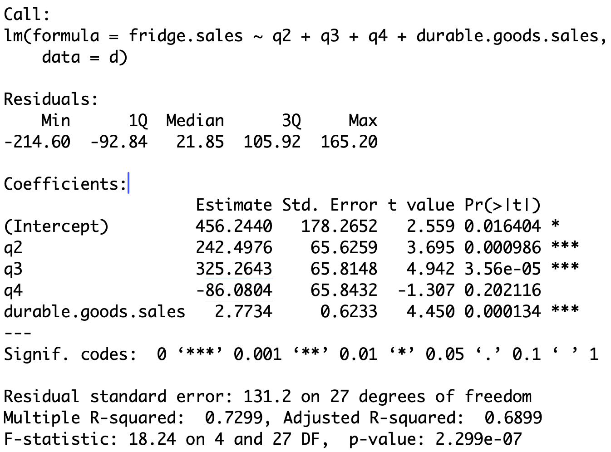

TrSS ESS
174664.1 586719.6 Lecture 11
ANOVA means Analysis of variance
Method of comparing means across samples
We first present ANOVA in the traditional way
Then we show that the ANOVA model is just a special form of linear regression
lmGoal: Compare population means \mu_i
Hypothesis set: We test for a difference in means
\begin{align*} H_0 \colon & \mu_1 = \mu_2 = \ldots = \mu_k \\ H_1 \colon & \mu_i \neq \mu_j \,\, \text{ for at least one pair } \, i \neq j \end{align*}
ANOVA is generalization of two-sample t-test to multiple populations
\overline{x}_i = \frac{1}{n_i} \sum_{j=1}^{n_i} x_{ij}
\overline{x} = \frac{1}{k} \sum_{i=1}^k \overline{x}_i = \frac{1}{k} \sum_{i=1}^k \left( \frac{1}{n_i} \sum_{j=1}^{n_i} x_{ij} \right)
\mathop{\mathrm{TSS}}:= \sum_{i=1}^{k} \sum_{j=1}^{n_i} ( x_{ij} - \overline{x} )^2
\mathop{\mathrm{TSS}} measures deviation of samples from the grand mean \overline{x}
The Error Sum of Squares is
\mathop{\mathrm{ESS}}= \sum_{i=1}^k \sum_{j=1}^{n_i} (x_{ij} - \overline{x}_i)^2
The interior sum of \mathop{\mathrm{ESS}} measures the variation within the i-th group
\mathop{\mathrm{ESS}} is then a measure of the within-group variability
\mathop{\mathrm{TrSS}}= \sum_{i=1}^{k} n_i ( \overline{x}_i - \overline{x})^2
\mathop{\mathrm{TrSS}} compares the means for each group \overline{x}_i with the grand mean \overline{x}
\mathop{\mathrm{TrSS}} is then a measure of variability among the groups
Note: Treatment comes from medical experiments, where the population mean models the effect of some treatment
\mathop{\mathrm{TSS}}= \mathop{\mathrm{ESS}}+ \mathop{\mathrm{TrSS}}
Assume k independent populations with distributions N(\mu_i,\sigma^2)
Assume to have n_i independent samples from each population: x_{i1}, x_{i2}, \ldots, x_{in_i}
Define the total number of samples as n = \sum_{i=1}^k n_i
Define the Error and Treatment Sum of Squares as in the previous slides
\mathop{\mathrm{TrSS}}= \sum_{i=1}^{k} n_i ( \overline{x}_i - \overline{x})^2 \,, \qquad \mathop{\mathrm{ESS}}= \sum_{i=1}^k \sum_{j=1}^{n_i} (x_{ij} - \overline{x}_i)^2
F := \frac{ \mathop{\mathrm{TrSS}}}{ k - 1 } \bigg/ \frac{ \mathop{\mathrm{ESS}}}{ n - k } \ \sim \ F_{k-1,n-k}
\begin{align*} \text{Case 1: } \, H_0 \, \text{ holds } & \, \iff \, \text{Population means are all the same} \\[15pt] & \, \iff \, \text{i-th sample mean is similar to grand mean: } \, \overline{x}_i \approx \overline{x} \,, \quad \forall\, i\\[15pt] & \, \iff \, \mathop{\mathrm{TrSS}}= \sum_{i=1}^{k} n_i ( \overline{x}_i - \overline{x})^2 \approx 0 \, \iff \, F = \frac{ \mathop{\mathrm{TrSS}}}{ k - 1 } \bigg/ \frac{ \mathop{\mathrm{ESS}}}{ n - k } \approx 0 \end{align*}
\begin{align*} \text{Case 2: } \, H_1 \, \text{ holds } & \, \iff \, \text{At least two population means are different} \\[15pt] & \, \iff \, \text{At least two populations satisfy } \, (\overline{x}_i - \overline{x})^2 \gg 0 \\[15pt] & \, \iff \, \mathop{\mathrm{TrSS}}= \sum_{i=1}^{k} n_i ( \overline{x}_i - \overline{x})^2 \gg 0 \, \iff \, F = \frac{ \mathop{\mathrm{TrSS}}}{ k - 1 } \bigg/ \frac{ \mathop{\mathrm{ESS}}}{ n - k } \gg 0 \end{align*}
Therefore, the test is one-sided: \,\, Reject H_0 \iff F \gg 0
Suppose given k independent samples
Goal: Compare population means \mu_i
Hypothesis set: We test for a difference in means
\begin{align*} H_0 \colon & \mu_1 = \mu_2 = \ldots = \mu_k \\ H_1 \colon & \mu_i \neq \mu_j \,\, \text{ for at least one pair } \, i \neq j \end{align*}
| Alternative | Rejection Region | F^* | p-value |
|---|---|---|---|
| \exists \,\, i \neq j s.t. \mu_i \neq \mu_j | F > F^* | F_{k-1,n-k}(0.05) | P(F_{k-1,n-k} > F) |
Consider 15 subjects split at random into 3 groups
Each group is assigned a month
For each group we record the number of calories consumed on a randomly chosen day
Assume that calories consumed are normally distributed with common variance, but maybe different means
| May | 2166 | 1568 | 2233 | 1882 | 2019 |
| Sep | 2279 | 2075 | 2131 | 2009 | 1793 |
| Dec | 2226 | 2154 | 2583 | 2010 | 2190 |
Question: Is there a difference in calories consumed each month?
# Enter the data
may <- c(2166, 1568, 2233, 1882, 2019)
sep <- c(2279, 2075, 2131, 2009, 1793)
dec <- c(2226, 2154, 2583, 2010, 2190)
# Combine vectors into a list and label them
data <- list(May = may, September = sep, December = dec)
# Create the boxplot
boxplot(data,
main = "Boxplot of Calories Consumed each month",
ylab = "Daily calories consumed")
It seems that consumption is, on average, higher in colder months
We suspect population means are different: need one-way ANOVA F-test
There are 3 groups, each with n_i = 5 samples
Compute the \mathop{\mathrm{TrSS}} and \mathop{\mathrm{ESS}} \mathop{\mathrm{TrSS}}= \sum_{i=1}^{k} n_i ( \overline{x}_i - \overline{x})^2 = 5 \sum_{i=1}^{k} ( \overline{x}_i - \overline{x})^2 \,, \qquad \mathop{\mathrm{ESS}}= \sum_{i=1}^k \sum_{j=1}^{n_i} (x_{ij} - \overline{x}_i)^2
TrSS ESS
174664.1 586719.6 We have k = 3 groups; \, n = 15 total samples
Compute the F-statistic
F = \frac{ \mathop{\mathrm{TrSS}}}{ k - 1 } \bigg/ \frac{ \mathop{\mathrm{ESS}}}{ n - k } \ \sim \ F_{k-1,n-k}
# Enter number of groups and sample size
k <- 3; n <- 15
# Compute F-statistic
F.obs = ( TrSS/(k-1) ) / ( ESS/(n-k) )
# Print
F.obs[1] 1.786177p = P( F_{k-1,n-k} > F ) = 1 - P( F_{k-1,n-k} \leq F )
[1] 0.2093929The p-value is p > 0.05 \quad \implies \quad Do not reject H_0
No reason to believe that population means are different
Conclusion: Despite the boxplot, the variation in average monthly calories consumption can be explained by chance only
Next: Use native R command for ANOVA test - Need Factors
Factors: A way to represent discrete variables taking a finite number of values
Example: Suppose to have a vector of people’s names
sex.num <- c(1, 1, 1, 0, 1, 0)
# Turn sex.num into a factor
sex.num.factor <- factor(sex.num)
# Print the factor obtained
print(sex.num.factor)[1] 1 1 1 0 1 0
Levels: 0 1The factor \, \texttt{sex.num.factor} looks like the original vector \, \texttt{sex.num}
The difference is that the factor \, \texttt{sex.num.factor} contains levels
sex.char <- c("female", "female", "female", "male", "female", "male")
# Turn sex.char into a factor
sex.char.factor <- factor(sex.char)
# Print the factor obtained
print(sex.char.factor)[1] female female female male female male
Levels: female maleAgain, the factor \, \texttt{sex.char.factor} looks like the original vector \, \texttt{sex.char}
Again, the difference is that the factor \, \texttt{sex.char.factor} contains levels
sex.char <- c("female", "female", "female", "male", "female", "male")
# Turn sex.char into a factor
factor(sex.char)[1] female female female male female male
Levels: female male[1] female female female male female male
Levels: male female[1] 1 1 1 0 1 0
Levels: 0 1[1] 1 1 0 1
Levels: 0 1[1] female female female male female male
Levels: female male[1] female female female female
Levels: female maleThe levels of sex.char.factor[c(1:3, 5)] are still \, \texttt{"female"} and \, \texttt{"male"}
This is despite sex.char.factor[c(1:3, 5)] only containing \, \texttt{"female"}
[1] "female" "male" [1] "0" "1"The levels of \, \texttt{sex.num.factor} are the strings \, \texttt{"0"} and \, \texttt{"1"}
This is despite the original vector \, \texttt{sex.num} being numeric
The command \, \texttt{factor} converted numeric levels into strings
The function \, \texttt{levels} can also be used to relabel factors
For example we can relabel
# Relabel levels of sex.char.factor
levels(sex.char.factor) <- c("f", "m")
# Print relabelled factor
print(sex.char.factor)[1] f f f m f m
Levels: f mLogical subsetting is done exactly like in the case of vectors
Important: Need to remember that levels are always strings
Example: To identify all the men in \, \texttt{sex.num.factor} we do
[1] FALSE FALSE FALSE TRUE FALSE TRUEfirstname <- c("Liz", "Jolene", "Susan", "Boris", "Rochelle", "Tim")
firstname[ sex.num.factor == "0" ][1] "Boris" "Tim" aov (analysis of variance)Place all the samples into one long vector values
Create a vector with corresponding group labels ind
Turn ind into a factor
Combine values and ind into a dataframe d
Therefore, dataframe d contains:
The ANOVA F-test is performed with
\text{aov(values } \sim \text{ ind, data = d)}
values ~ ind is the formula coupling values to the corresponding groupRecall: we have 15 subjects split at random into 3 groups
Each group is assigned a month
For each group we record the number of calories consumed on a randomly chosen day
Assume that calories consumed are normally distributed with common variance, but maybe different means
| May | 2166 | 1568 | 2233 | 1882 | 2019 |
| Sep | 2279 | 2075 | 2131 | 2009 | 1793 |
| Dec | 2226 | 2154 | 2583 | 2010 | 2190 |
Question: Is there a difference in calories consumed each month?
# Enter the data
may <- c(2166, 1568, 2233, 1882, 2019)
sep <- c(2279, 2075, 2131, 2009, 1793)
dec <- c(2226, 2154, 2583, 2010, 2190)
# Combine values into one long vector
values <- c(may, sep, dec)
# Create vector of group labels
ind <- rep(c("May", "Sep", "Dec"), each = 5)
# Turn vector of group labels into a factor
# Note that we order the levels
ind <- factor(ind, levels = c("May", "Sep", "Dec"))
# Combine values and labels into a data frame
d <- data.frame(values, ind)
# Print d for visualization
print(d) values ind
1 2166 May
2 1568 May
3 2233 May
4 1882 May
5 2019 May
6 2279 Sep
7 2075 Sep
8 2131 Sep
9 2009 Sep
10 1793 Sep
11 2226 Dec
12 2154 Dec
13 2583 Dec
14 2010 Dec
15 2190 DecPreviously, we constructed a boxplot by placing the data into a list
Now that we have a dataframe, the commands are much simpler:
d to boxplotvalues ~ indAlready observed: Consumption is, on average, higher in colder months
We suspect population means are different: need one-way ANOVA F-test
We have already conducted the test by hand. We now use aov
d
values contains calories consumedind contains month labels# Perform ANOVA F-test for difference in means
model <- aov(values ~ ind, data = d)
# Print summary
summary(model) Df Sum Sq Mean Sq F value Pr(>F)
ind 2 174664 87332 1.786 0.209
Residuals 12 586720 48893 As obtained with hand calculation, the p-value is p = 0.209
p > 0.05 \implies Do not reject H_0: Population means are similar
When only 2 groups are present, they coincide:
ANOVA F-test for difference in means
Two-sample t-test for difference in means
(with assumption of equal variance)
Example: Let us compare calories data only for the months of May and Dec
| May | 2166 | 1568 | 2233 | 1882 | 2019 |
| Dec | 2226 | 2154 | 2583 | 2010 | 2190 |
# Enter the data
may <- c(2166, 1568, 2233, 1882, 2019)
dec <- c(2226, 2154, 2583, 2010, 2190)
# Two-sample t-test for difference in means
t.test(may, dec, var.equal = T)$p.value[1] 0.1259272The p-value is p \approx 0.126
Since p > 0.05, we do not reject H_0
In particular, we conclude that populations means are similar:
# Combine values into one long vector
values <- c(may, dec)
# Create factor of group labels
ind <- factor(rep(c("May", "Dec"), each = 5))
# Combine values and labels into a data frame
d <- data.frame(values, ind)
# Perform ANOVA F-test
model <- aov(values ~ ind, data = d)
# Print summary
summary(model) Df Sum Sq Mean Sq F value Pr(>F)
ind 1 167702 167702 2.919 0.126
Residuals 8 459636 57455 The p-values p \approx 0.126 coincide! ANOVA F-test and Two-sample t-test are equivalent
This fact is discussed in details in the next 2 Parts
Dummy variable: Variables X which are qualitative in nature
ANOVA: refers to situations where regression models contain
ANCOVA: refers to situations where regression models contain a combination of
Dummy variable:
Regression models can include dummy variables
Qualitatitve binary variables can be represented by X with
Examples of binary quantitative variables are
fridge.sales durable.goods.sales q1 q2 q3 q4 quarter
1 1317 252.6 1 0 0 0 1
2 1615 272.4 0 1 0 0 2
3 1662 270.9 0 0 1 0 3
4 1295 273.9 0 0 0 1 4
5 1271 268.9 1 0 0 0 1
6 1555 262.9 0 1 0 0 2
7 1639 270.9 0 0 1 0 3
8 1238 263.4 0 0 0 1 4
9 1277 260.6 1 0 0 0 1
10 1258 231.9 0 1 0 0 2
11 1417 242.7 0 0 1 0 3
12 1185 248.6 0 0 0 1 4
13 1196 258.7 1 0 0 0 1
14 1410 248.4 0 1 0 0 2
15 1417 255.5 0 0 1 0 3
16 919 240.4 0 0 0 1 4
17 943 247.7 1 0 0 0 1
18 1175 249.1 0 1 0 0 2
19 1269 251.8 0 0 1 0 3
20 973 262.0 0 0 0 1 4
21 1102 263.3 1 0 0 0 1
22 1344 280.0 0 1 0 0 2
23 1641 288.5 0 0 1 0 3
24 1225 300.5 0 0 0 1 4
25 1429 312.6 1 0 0 0 1
26 1699 322.5 0 1 0 0 2
27 1749 324.3 0 0 1 0 3
28 1117 333.1 0 0 0 1 4
29 1242 344.8 1 0 0 0 1
30 1684 350.3 0 1 0 0 2
31 1764 369.1 0 0 1 0 3
32 1328 356.4 0 0 0 1 4| Fridge Sales | Durable Goods Sales | Q1 | Q2 | Q3 | Q4 | Quarter |
|---|---|---|---|---|---|---|
| 1317 | 252.6 | 1 | 0 | 0 | 0 | 1 |
| 1615 | 272.4 | 0 | 1 | 0 | 0 | 2 |
| 1662 | 270.9 | 0 | 0 | 1 | 0 | 3 |
| 1295 | 273.9 | 0 | 0 | 0 | 1 | 4 |
Two alternative approaches:
Differences between the two approaches:
This method works with command lm
This method works with the command aov
Question: Why only k - 1 dummy variables?
Answer: To avoid the dummy variable trap
To illustrate the dummy variable trap, consider the following
\mathbf{1}_j(i) = \begin{cases} 1 & \text{ if sample i belongs to Quarter j} \\ 0 & \text{ otherwise} \\ \end{cases}
Y = \beta_0 \cdot (1) + \beta_1 \mathbf{1}_1 + \beta_2 \mathbf{1}_2 + \beta_3 \mathbf{1}_3 + \beta_4 \mathbf{1}_4 + \varepsilon
\mathbf{1}_1 + \mathbf{1}_2 + \mathbf{1}_3 + \mathbf{1}_4 = 1
Dummy variable trap: Variables are collinear (linearly dependent)
Indeed the design matrix is
Z = \left( \begin{array}{ccccc} 1 & 1 & 0 & 0 & 0 \\ 1 & 0 & 1 & 0 & 0 \\ 1 & 0 & 0 & 1 & 0 \\ 1 & 0 & 0 & 0 & 1 \\ 1 & 1 & 0 & 0 & 0 \\ \dots & \dots & \dots & \dots & \dots \\ \end{array} \right)
We want to avoid Multicollinearity (or dummy variable trap)
How? Drop one dummy variable (e.g. the first) and consider the model
Y = \beta_1 \cdot (1) + \beta_2 \mathbf{1}_2 + \beta_3 \mathbf{1}_3 + \beta_4 \mathbf{1}_4 + \varepsilon
If data belongs to Q1, then \mathbf{1}_2 = \mathbf{1}_3 = \mathbf{1}_4 = 0
Therefore, in general, we have
\mathbf{1}_2 + \mathbf{1}_3 + \mathbf{1}_4 \not\equiv 1
Y = \beta_1 \cdot (1) + \beta_2 \mathbf{1}_2 + \beta_3 \mathbf{1}_3 + \beta_4 \mathbf{1}_4 + \varepsilon\qquad ?
\mathbf{1}_1 + \mathbf{1}_2 + \mathbf{1}_3 + \mathbf{1}_4 = 1
\begin{align*} Y & = \beta_1 \cdot ( \mathbf{1}_1 + \mathbf{1}_2 + \mathbf{1}_3 + \mathbf{1}_4 ) + \beta_2 \mathbf{1}_2 + \beta_3 \mathbf{1}_3 + \beta_4 \mathbf{1}_4 + \varepsilon\\[10pts] & = \beta_1 \mathbf{1}_1 + (\beta_1 + \beta_2) \mathbf{1}_2 + (\beta_1 + \beta_3) \mathbf{1}_3 + (\beta_1 + \beta_4 ) \mathbf{1}_4 + \varepsilon \end{align*}
Therefore, the regression coefficients are such that
| Group | Increase Described By |
|---|---|
| \mathbf{1}_1 | \beta_1 |
| \mathbf{1}_2 | \beta_1 + \beta_2 |
| \mathbf{1}_3 | \beta_1 + \beta_3 |
| \mathbf{1}_4 | \beta_1 + \beta_4 |
Conclusion: When fitting regression model with dummy variables
Increase for first dummy variable \mathbf{1}_1 is intercept term \beta_1
Increase for successive dummy variables \mathbf{1}_i with i > 1 is computed by \beta_1 + \beta_i
Intercept coefficient acts as base reference point
\mathbf{1}_j(i) = \begin{cases} 1 & \text{ if } X(i) = j \\ 0 & \text{ otherwise} \\ \end{cases}
\mathbf{1}_1 + \mathbf{1}_2 + \ldots + \mathbf{1}_k = 1
Y = \beta_1 \cdot (1) + \beta_2 \mathbf{1}_2 + \beta_3 \mathbf{1}_3 + \ldots + \beta_k \mathbf{1}_k + \varepsilon
\mathbf{1}_2 = \mathbf{1}_3 = \ldots = \mathbf{1}_k = 0
\mathbf{1}_2 + \mathbf{1}_3 + \ldots + \mathbf{1}_k \not \equiv 1
Y = \beta_1 \cdot (1) + \beta_2 \mathbf{1}_2 + \beta_3 \mathbf{1}_3 + \ldots + \beta_k \mathbf{1}_k + \varepsilon\quad ?
\mathbf{1}_1 + \mathbf{1}_2 + \ldots + \mathbf{1}_k = 1
Y = \beta_1 \mathbf{1}_1 + (\beta_1 + \beta_2) \mathbf{1}_2 + \ldots + (\beta_1 + \beta_k) \mathbf{1}_k + \varepsilon
Conclusion: When fitting regression model with dummy variables
| Group | Increase Described By |
|---|---|
| \mathbf{1}_1 | \beta_1 |
| \mathbf{1}_i | \beta_1 + \beta_i |
Increase for first dummy variable \mathbf{1}_1 is intercept term \beta_1
Increase for successive dummy variables \mathbf{1}_i with i > 1 is computed by \beta_1 + \beta_i
Intercept coefficient acts as base reference point
ANOVA can be seen as linear regression problem, by using dummy variables
In particular, we will show that
Y_i = \beta_1 + \beta_2 \, \mathbf{1}_2 (i) + \varepsilon_i
Assume given two independent normal populations N(\mu_1, \sigma^2) and N(\mu_2, \sigma^2)
We have two samples
The data vector y is obtained by concatenating a and b
y = (a,b) = (a_1, \ldots, a_{n_1}, b_1, \ldots, b_{n_2} )
Y_i = \beta_1 + \beta_2 \, \mathbf{1}_2 (i) + \varepsilon_i
\mathbf{1}_2(i) = \begin{cases} 1 & \text{ if i-th sample belongs to population 2} \\ 0 & \text{ otherwise} \end{cases}
{\rm I\kern-.3em E}[Y | \mathbf{1}_2 = x] = \beta_1 + \beta_2 x
Y | \text{sample belongs to population 1} \ \sim \ N(\mu_1, \sigma^2)
{\rm I\kern-.3em E}[Y | \mathbf{1}_2 = 0] = {\rm I\kern-.3em E}[Y | \text{ sample belongs to population 1}] = \mu_1
{\rm I\kern-.3em E}[Y | \mathbf{1}_2 = x] = \beta_1 + \beta_2 x
{\rm I\kern-.3em E}[Y | \mathbf{1}_2 = 0] = \beta_1 + \beta_2 \cdot 0 = \beta_1 \qquad \implies \qquad \beta_1 = \mu_1
Y | \text{sample belongs to population 2} \ \sim \ N(\mu_2, \sigma^2)
{\rm I\kern-.3em E}[Y | \mathbf{1}_2 = 1] = {\rm I\kern-.3em E}[Y | \text{ sample belongs to population 2}] = \mu_2
{\rm I\kern-.3em E}[Y | \mathbf{1}_2 = x] = \beta_1 + \beta_2 x
{\rm I\kern-.3em E}[Y | \mathbf{1}_2 = 1] = \beta_1 + \beta_2 \qquad \implies \qquad \beta_1 + \beta_2 = \mu_2
\beta_1 = \mu_1 \,, \qquad \beta_1 + \beta_2 = \mu_2 \qquad \implies \qquad \beta_2 = \mu_2 - \mu_1
Y_i = \beta_1 + \beta_2 \, \mathbf{1}_{2} (i) + \varepsilon_i
H_0 \colon \beta_2 = 0 \,, \qquad H_1 \colon \beta_2 \neq 0
Since \beta_2 = \mu_2 - \mu_1, the above hypothesis is equivalent to H_0 \colon \mu_1 = \mu_2 \,, \qquad H_1 \colon \mu_1 \neq \mu_2
Hypotheses for F-test of Overall Significance and two-sample t-test are equivalent
In the Homework, we have also proven that the ML estimators for the model Y_i = \beta_1 + \beta_2 \, \mathbf{1}_{2} (i) + \varepsilon_i satisfy \hat{\beta}_1 = \overline{a} \,, \qquad \hat{\beta}_2 = \overline{b} - \overline{a}
With this information, it is easy to check that they are equivalent
F-test of Overall Significance and two-sample t-test are equivalent
\begin{align*} Y_i & = \hat{\beta}_1 + \hat{\beta}_2 \, \mathbf{1}_{2} (i) + \varepsilon_i \\[10pt] & = \overline{a} + (\overline{b} - \overline{a}) \, \mathbf{1}_{2} (i) + \varepsilon_i \end{align*}
\begin{align*} {\rm I\kern-.3em E}[Y| \text{Sample is from population 1}] & = \overline{a} \\[10pt] {\rm I\kern-.3em E}[Y| \text{Sample is from population 2}] & = \overline{b} \end{align*}
Now, consider the general ANOVA case
\begin{align*} H_0 & \colon \mu_1 = \mu_2 = \ldots = \mu_k \\ H_1 & \colon \mu_i \neq \mu_j \text{ for at least one pair i and j} \end{align*}
We want to introduce dummy variable regression model which models ANOVA
To each population, associate a dummy variable \mathbf{1}_{i}(j) = \begin{cases} 1 & \text{ if j-th sample belongs to population i} \\ 0 & \text{ otherwise} \\ \end{cases}
Denote by x_{i1}, \ldots, x_{in_i} the iid sample of size n_{i} from population i
Concatenate these samples into a long vector (length n_1 + \ldots + n_2) y = (\underbrace{x_{11}, \ldots, x_{1n_1}}_{\text{population 1}}, \, \underbrace{x_{21}, \ldots, x_{2n_2}}_{\text{population 2}} , \, \ldots, \, \underbrace{x_{k1}, \ldots, x_{kn_k}}_{\text{population k}})
Consider the dummy variable model (with \mathbf{1}_{1} omitted) Y_i = \beta_1 + \beta_2 \, \mathbf{1}_{2} (i) + \beta_3 \, \mathbf{1}_{3} (i) + \ldots + \beta_k \, \mathbf{1}_{k} (i) + \varepsilon_i
In particular, the regression function is {\rm I\kern-.3em E}[Y | \mathbf{1}_{2} = x_2 , \, \ldots, \, \mathbf{1}_{k} = x_k ] = \beta_1 + \beta_2 \, x_2 + \ldots + \beta_k \, x_k
By construction, we have that Y | \text{sample belongs to population i} \ \sim \ N(\mu_i , \sigma^2)
A sample point belongs to population 1 if and only if \mathbf{1}_{2} = \mathbf{1}_{3} = \ldots = \mathbf{1}_{k} = 0
Hence, we can compute the conditional expectation {\rm I\kern-.3em E}[ Y | \mathbf{1}_{2} = 0 , \, \ldots, \, \mathbf{1}_{k} = 0] = {\rm I\kern-.3em E}[Y | \text{sample belongs to population 1}] = \mu_1
On the other hand, by definition of regression function, we get {\rm I\kern-.3em E}[ Y | \mathbf{1}_{2} = 0 , \, \ldots, \, \mathbf{1}_{k} = 0] = \beta_1 + \beta_2 \cdot 0 + \ldots + \beta_k \cdot 0 = \beta_1 \quad \implies \quad \mu_1 = \beta_1
Similarly, a sample point belongs to population 2 if and only if \mathbf{1}_{2} = 1 \quad \text{and} \quad \mathbf{1}_{1} = \mathbf{1}_{3} = \ldots = \mathbf{1}_{k} = 0
Hence, we can compute the conditional expectation {\rm I\kern-.3em E}[ Y | \mathbf{1}_{2} = 1 , \, \mathbf{1}_{3} = 0, \, \ldots, \, \mathbf{1}_{k} = 0] = {\rm I\kern-.3em E}[Y | \text{sample belongs to population } A_2] = \mu_2
On the other hand, by definition of regression function, we get {\rm I\kern-.3em E}[ Y | \mathbf{1}_{2} = 1 , \, \mathbf{1}_{3} = 0, \, \ldots, \, \mathbf{1}_{k} = 0] = \beta_1 + \beta_2 \cdot 1 + \ldots + \beta_k \cdot 0 = \beta_1 + \beta_2
Therefore, we conclude that \mu_2 = \beta_1 + \beta_2
Arguing in a similar way, we can show that \mu_i = \beta_1 + \beta_i \,, \quad \forall \, i \geq 2
Therefore, we have proven \mu_1 = \beta_1 \,, \quad \mu_i = \beta_1 + \beta_i \quad \forall \, i \geq 2 \quad \, \implies \quad \, \beta_1 = \mu_1 \,, \quad \beta_i = \mu_i - \mu_1 \quad \forall \, \, i \geq 2
Recall that the regression model is Y_i = \beta_1 + \beta_2 \, \mathbf{1}_{2} (i) + \ldots + \beta_k \, \mathbf{1}_{k} (i) + \varepsilon_i
The hypothesis for F-test for Overall Significance for above model is H_0 \colon \beta_2 = \beta_3 = \ldots = \beta_k = 0 \,, \qquad H_1 \colon \exists \, i \in \{2, \ldots, k\} \text{ s.t. } \beta_i \neq 0
Since \beta_i = \mu_i - \mu_1 for all i \geq 2, the above is equivalent to H_0 \colon \mu_1 = \mu_2 = \ldots = \mu_k \, \qquad H_1 \colon \mu_i \neq \mu_j \text{ for at least one pair } i \neq j
Hypotheses for F-test of Overall Significance and ANOVA F-test are equivalent
Denote by \overline{x}_i the mean of the sample x_{i1}, \ldots, x_{i n_i} from population i
It is easy to prove that the ML estimators for the model Y_i = \beta_1 + \beta_2 \, \mathbf{1}_{2} (i) + \ldots + \beta_k \, \mathbf{1}_{k} (i) + \varepsilon_i satisfy \hat{\beta}_1 = \overline{x}_1 \,, \qquad \hat{\beta}_i = \overline{x}_i - \overline{x}_1 \, \quad \forall \, i \geq 2
With this information, it is easy to check that they are equivalent
F-test of Overall Significance and ANOVA F-test are equivalent
\begin{align*} Y_i & = \hat{\beta}_1 + \hat{\beta}_2 \, \mathbf{1}_{2} (i) + \hat{\beta}_k \, \mathbf{1}_{k} (i) + \varepsilon_i \\[10pt] & = \overline{x}_1 + (\overline{x}_2 - \overline{x}_1) \, \mathbf{1}_{2} (i) + \ldots + (\overline{x}_k - \overline{x}_1) \, \mathbf{1}_{k} (i) + \varepsilon_i \end{align*}
{\rm I\kern-.3em E}[Y| \text{Sample is from population i}] = \hat{\beta}_1 + \hat{\beta}_i = \overline{x}_i
The data in fridge_sales.txt links
For the moment, ignore the data on the Sales of durable goods
Goal: Determine if Fridge sales are linked to the time of the year
There are two ways this can be achieved in R
# Load dataset on Fridge Sales
d <- read.table(file = "fridge_sales.txt", header = TRUE)
# Print first 4 rows
head(d, n=4) fridge.sales durable.goods.sales q1 q2 q3 q4 quarter
1 1317 252.6 1 0 0 0 1
2 1615 272.4 0 1 0 0 2
3 1662 270.9 0 0 1 0 3
4 1295 273.9 0 0 0 1 4d$q1, d$q2, d$q3, d$q4 are vectors taking the values \, \texttt{0} and \, \texttt{1}
d$quarter is a vector taking the values \, \texttt{1}, \texttt{2}, \texttt{3}, \texttt{4}
[1] 1 2 3 4 1 2 3 4 1 2 3 4 1 2 3 4 1 2 3 4 1 2 3 4 1 2 3 4 1 2 3 4
Levels: 1 2 3 4# Make boxplot of Fridge Sales vs Quarter
boxplot(fridge.sales ~ quarter, data = d,
main = "Quarterly Fridge sales", ylab = "Fridge sales")
Fridge sales seem higher in Q2 and Q3
We suspect population means are different: need one-way ANOVA F-test
As already mentioned, there are 2 ways of performing ANOVA F-test
\begin{align*} H_0 & \colon \mu_{1} = \mu_{2} = \mu_3 = \mu_4 \\ H_1 & \colon \mu_i \neq \mu_j \, \text{ for at least one pair } i \neq j \end{align*}
To decide on the above hypothesis, we use the ANOVA F-test
Already seen an example of this with the calories consumption dataset
# Perform ANOVA F-test - Recall: quarter needs to be a factor
anova <- aov(fridge.sales ~ quarter, data = d)
# Print output
summary(anova) Df Sum Sq Mean Sq F value Pr(>F)
quarter 3 915636 305212 10.6 7.91e-05 ***
Residuals 28 806142 28791
---
Signif. codes: 0 '***' 0.001 '**' 0.01 '*' 0.05 '.' 0.1 ' ' 1The F-statistic for the ANOVA F-test is \,\, F = 10.6
The p-value for ANOVA F-test is \,\, p = 7.91 \times 10^{-5}
Therefore p < 0.05, and we reject H_0
\mathbf{1}_i(j) = \begin{cases} 1 & \text{ if sample j belongs to Quarter i} \\ 0 & \text{ otherwise} \\ \end{cases}
Let Y denote the Fridge sales data
Consider the dummy variable regression model
Y = \beta_1 + \beta_2 \mathbf{1}_2 + \beta_3 \mathbf{1}_3 + \beta_4 \mathbf{1}_4 + \varepsilon
We can fit the following model in 2 equivalent ways
\begin{equation} \tag{1} Y = \beta_1 + \beta_2 \mathbf{1}_2 + \beta_3 \mathbf{1}_3 + \beta_4 \mathbf{1}_4 + \varepsilon \end{equation}
# We drop q1 to avoid dummy variable trap
dummy <- lm (fridge.sales ~ q2 + q3 + q4, data = d)
summary(dummy)lm automatically encodes \, \texttt{quarter} into 3 dummy variables \, \texttt{q2}, \, \texttt{q3}, \, \texttt{q4}Call:
lm(formula = fridge.sales ~ q2 + q3 + q4, data = d)
Coefficients:
Estimate Std. Error t value Pr(>|t|)
(Intercept) 1222.12 59.99 20.372 < 2e-16 ***
q2 245.37 84.84 2.892 0.007320 **
q3 347.63 84.84 4.097 0.000323 ***
q4 -62.12 84.84 -0.732 0.470091
---
Signif. codes: 0 ‘***’ 0.001 ‘**’ 0.01 ‘*’ 0.05 ‘.’ 0.1 ‘ ’ 1
Residual standard error: 169.7 on 28 degrees of freedom
Multiple R-squared: 0.5318, Adjusted R-squared: 0.4816
F-statistic: 10.6 on 3 and 28 DF, p-value: 7.908e-05Call:
lm(formula = fridge.sales ~ quarter, data = d)
Coefficients:
Estimate Std. Error t value Pr(>|t|)
(Intercept) 1222.12 59.99 20.372 < 2e-16 ***
quarter2 245.37 84.84 2.892 0.007320 **
quarter3 347.63 84.84 4.097 0.000323 ***
quarter4 -62.12 84.84 -0.732 0.470091
---
Signif. codes: 0 ‘***’ 0.001 ‘**’ 0.01 ‘*’ 0.05 ‘.’ 0.1 ‘ ’ 1
Residual standard error: 169.7 on 28 degrees of freedom
Multiple R-squared: 0.5318, Adjusted R-squared: 0.4816
F-statistic: 10.6 on 3 and 28 DF, p-value: 7.908e-05The two outputs are the same (only difference is variables names)
\, \texttt{quarter} is a factor with four levels \, \texttt{1}, \texttt{2}, \texttt{3}, \texttt{4}
Variables \, \texttt{quarter2}, \texttt{quarter3}, \texttt{quarter4} refer to the levels \, \texttt{2}, \texttt{3}, \texttt{4}
Call:
lm(formula = fridge.sales ~ quarter, data = d)
Coefficients:
Estimate Std. Error t value Pr(>|t|)
(Intercept) 1222.12 59.99 20.372 < 2e-16 ***
quarter2 245.37 84.84 2.892 0.007320 **
quarter3 347.63 84.84 4.097 0.000323 ***
quarter4 -62.12 84.84 -0.732 0.470091
---
Signif. codes: 0 ‘***’ 0.001 ‘**’ 0.01 ‘*’ 0.05 ‘.’ 0.1 ‘ ’ 1
Residual standard error: 169.7 on 28 degrees of freedom
Multiple R-squared: 0.5318, Adjusted R-squared: 0.4816
F-statistic: 10.6 on 3 and 28 DF, p-value: 7.908e-05\, \texttt{lm} interprets \, \texttt{quarter2}, \texttt{quarter3}, \texttt{quarter4} as dummy variables
Note that \, \texttt{lm} automatically drops \, \texttt{quarter1} to prevent dummy variable trap
Thus: \, \texttt{lm} behaves the same way as if we passed dummy variables \, \texttt{q2}, \texttt{q3}, \texttt{q4}
Call:
lm(formula = fridge.sales ~ q2 + q3 + q4, data = d)
Coefficients:
Estimate Std. Error t value Pr(>|t|)
(Intercept) 1222.12 59.99 20.372 < 2e-16 ***
q2 245.37 84.84 2.892 0.007320 **
q3 347.63 84.84 4.097 0.000323 ***
q4 -62.12 84.84 -0.732 0.470091 Recall that \, \texttt{Intercept} refers to coefficient for \, \texttt{q1}
Coefficients for \, \texttt{q2}, \texttt{q3}, \texttt{q4} are obtained by summing \, \texttt{Intercept} to coefficient in appropriate row
Call:
lm(formula = fridge.sales ~ q2 + q3 + q4, data = d)
Coefficients:
Estimate Std. Error t value Pr(>|t|)
(Intercept) 1222.12 59.99 20.372 < 2e-16 ***
q2 245.37 84.84 2.892 0.007320 **
q3 347.63 84.84 4.097 0.000323 ***
q4 -62.12 84.84 -0.732 0.470091 | Dummy variable | Coefficient formula | Estimated coefficient |
|---|---|---|
| \texttt{q1} | \beta_1 | 1222.12 |
| \texttt{q2} | \beta_1 + \beta_2 | 1222.12 + 245.37 = 1467.49 |
| \texttt{q3} | \beta_1 + \beta_3 | 1222.12 + 347.63 = 1569.75 |
| \texttt{q4} | \beta_1 + \beta_4 | 1222.12 - 62.12 = 1160 |
\begin{align*} {\rm I\kern-.3em E}[\text{ Fridge sales } ] = & \,\, 1222.12 \times \, \text{Q1} + 1467.49 \times \, \text{Q2} + \\[15pts] & \,\, 1569.75 \times \, \text{Q3} + 1160 \times \, \text{Q4} \end{align*}
\text{Q1} + \text{Q2} + \text{Q4} + \text{Q4} = 1
\begin{align*} {\rm I\kern-.3em E}[\text{ Fridge sales } | \text{ Q1} = 1] & = 1222.12 \,, \qquad {\rm I\kern-.3em E}[\text{ Fridge sales } | \text{ Q2} = 1] = 1467.49 \\[15pts] {\rm I\kern-.3em E}[\text{ Fridge sales } | \text{ Q3} = 1] & = 1569.75 \,, \qquad {\rm I\kern-.3em E}[\text{ Fridge sales } | \text{ Q4} = 1] = 1160 \end{align*}
# For example, compute average fridge sales in Q3
fridge.sales.q3 <- d$fridge.sales[ d$quarter == 3 ]
mean(fridge.sales.q3)[1] 1569.75ANOVA F-test is equivalend to F-test for Overall Significance of model Y = \beta_1 + \beta_2 \mathbf{1}_2 + \beta_3 \mathbf{1}_3 + \beta_4 \mathbf{1}_4 + \varepsilon
Therefore, look at F-test line in the summary of model \texttt{lm(fridge} \, \sim \, \texttt{q2 + q3 + q4)}
F-statistic: 10.6 on 3 and 28 DF, p-value: 7.908e-05F-statistic is \,\, F = 10.6 \, , \quad p-value is \,\, p = 7.908 \times 10^{-5}
These coincide with F-statistic and p-value for ANOVA F-test
Therefore p < 0.05, and we reject H_0
Linear regression models seen so far:
ANCOVA:
Regression models with different slopes / intercept for different parts of the dataset
These are sometimes referred to as segmented regression models
For example, consider the ANCOVA regression model
Y=\beta_1+\beta_2 X + \beta_3 Q + \beta_4 XQ + \varepsilon
X is quantitative variable; Q is qualitative, with values Q = 0, 1
XQ is called interaction term
With reference to the ANCOVA model Y=\beta_1+\beta_2 X + \beta_3 Q + \beta_4 XQ + \varepsilon
If Q=0 Y=\beta_1+\beta_2 X+ \varepsilon
If Q=1, the result is a model with different intercept and slope Y=(\beta_1+\beta_3)+(\beta_2 +\beta_4)X+ \varepsilon
If Q=1 and \beta_4=0, we get model with a different intercept but the same slope Y=(\beta_1+\beta_3)+\beta_2 X+ \varepsilon
ANCOVA models are simply fitted with lm
Code for this example is available here ancova.R
The data in fridge_sales.txt links
Goal: Predict Fridge sales in terms of durable goods sales and time of the year
Denote by F the Fridge sales and by D the durable goods sales
To predict Fridge sales from durable goods sales, we could simply fit the model
F = \beta_1 + \beta_2 D + \varepsilon
However, the intercept \beta_1 can potentially change depending on the quarter
To account for quarterly trends, we fit ANCOVA model instead
# Load dataset on Fridge Sales
d <- read.table(file = "fridge_sales.txt", header = TRUE)
# Print first 4 rows
head(d, n=4) fridge.sales durable.goods.sales q1 q2 q3 q4 quarter
1 1317 252.6 1 0 0 0 1
2 1615 272.4 0 1 0 0 2
3 1662 270.9 0 0 1 0 3
4 1295 273.9 0 0 0 1 4Variables d$q1, d$q2, d$q3, d$q4 are vectors taking the values \, \texttt{0} and \, \texttt{1}
The variable d$quarter is a vector taking the values \, \texttt{1}, \texttt{2}, \texttt{3}, \texttt{4}
\mathbf{1}_i(j) = \begin{cases} 1 & \text{ if sample j belongs to Quarter i} \\ 0 & \text{ otherwise} \\ \end{cases}
F = \beta_1 + \beta_2 \mathbf{1}_2 + \beta_3 \mathbf{1}_3 + \beta_4 \mathbf{1}_4 + \beta_5 D + \varepsilon
Note: We have dropped the variable \mathbf{1}_1 to avoid dummy variable trap
This way, the intercept will vary depending on the quarter
We can fit the ANCOVA model below in 2 equivalent ways
\begin{equation} \tag{2} F = \beta_1 + \beta_2 \mathbf{1}_2 + \beta_3 \mathbf{1}_3 + \beta_4 \mathbf{1}_4 + \beta_5 D + \varepsilon \end{equation}
# Drop q1 to avoid dummy variable trap
ancova <- lm(fridge.sales ~ q2 + q3 + q4 + durable.goods.sales, data = d)lm automatically encodes \, \texttt{quarter} into 3 dummy variables \, \texttt{q2}, \, \texttt{q3}, \, \texttt{q4}
Call:
lm(formula = fridge.sales ~ q2 + q3 + q4 + durable.goods.sales,
data = d)
Coefficients:
Estimate Std. Error t value Pr(>|t|)
(Intercept) 456.2440 178.2652 2.559 0.016404 *
q2 242.4976 65.6259 3.695 0.000986 ***
q3 325.2643 65.8148 4.942 3.56e-05 ***
q4 -86.0804 65.8432 -1.307 0.202116
durable.goods.sales 2.7734 0.6233 4.450 0.000134 *** Recall that \, \texttt{Intercept} refers to coefficient for \, \texttt{q1}
Coefficients for \, \texttt{q2}, \texttt{q3}, \texttt{q4} are obtained by summing \, \texttt{Intercept} to coefficient in appropriate row
Call:
lm(formula = fridge.sales ~ q2 + q3 + q4 + durable.goods.sales,
data = d)
Coefficients:
Estimate Std. Error t value Pr(>|t|)
(Intercept) 456.2440 178.2652 2.559 0.016404 *
q2 242.4976 65.6259 3.695 0.000986 ***
q3 325.2643 65.8148 4.942 3.56e-05 ***
q4 -86.0804 65.8432 -1.307 0.202116
durable.goods.sales 2.7734 0.6233 4.450 0.000134 *** | Variable | Coefficient formula | Estimated coefficient |
|---|---|---|
| \texttt{q1} | \beta_1 | \approx 456.24 |
| \texttt{q2} | \beta_1 + \beta_2 | 456.244 + 242.4976 \approx 698.74 |
| \texttt{q3} | \beta_1 + \beta_3 | 456.244 + 325.2643 \approx 781.51 |
| \texttt{q4} | \beta_1 + \beta_4 | 456.244 - 86.0804 \approx 370.16 |
| D | \beta_5 | \approx 2.77 |
\begin{align*} {\rm I\kern-.3em E}[\text{ Fridge sales } ] = & \,\, 456.24 \times \, \text{Q1} + 698.74 \times \, \text{Q2} + \\[5pts] & \,\, 781.51 \times \, \text{Q3} + 370.16 \times \, \text{Q4} + 2.77 \times \text{D} \end{align*}
| Quarter | Regression line |
|---|---|
| Q1 | F = 456.24 + 2.77 \times \text{D} |
| Q2 | F = 698.74 + 2.77 \times \text{D} |
| Q3 | F = 781.51 + 2.77 \times \text{D} |
| Q4 | F = 370.16 + 2.77 \times \text{D} |
# Fit simple linear model
linear <- lm(fridge.sales ~ durable.goods.sales, data = d)
# F-test for Model Selection
anova(linear, ancova)Analysis of Variance Table
Model 1: fridge.sales ~ durable.goods.sales
Model 2: fridge.sales ~ quarter + durable.goods.sales
Res.Df RSS Df Sum of Sq F Pr(>F)
1 30 1377145
2 27 465085 3 912060 17.65 1.523e-06 ***The p-value is p < 0.05 \quad \implies \quad Reject H_0
The ANCOVA model offers a better fit than the linear model